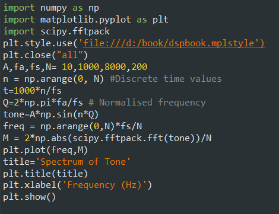
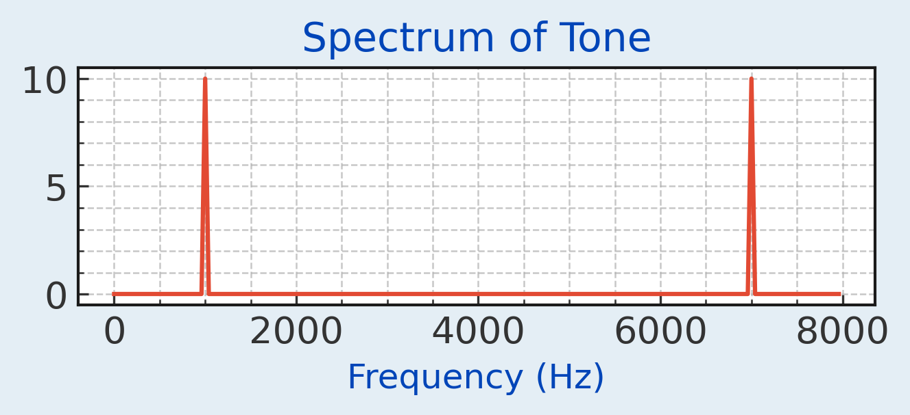
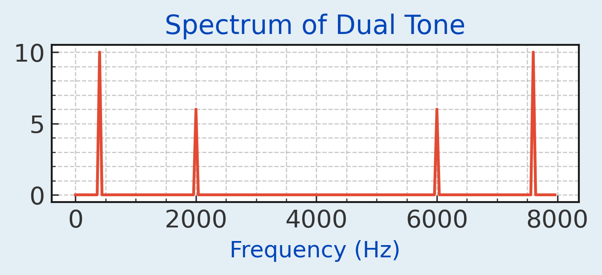
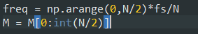
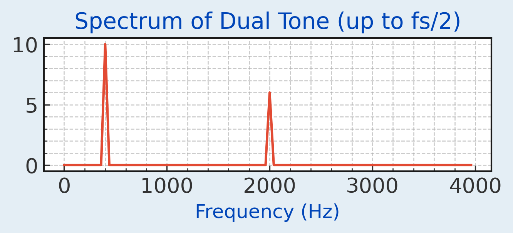
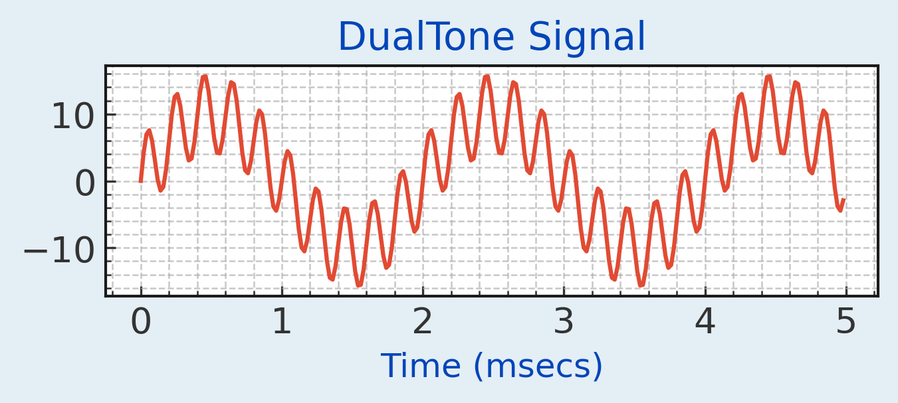

We can plot the frequencies in a signal by looking at its spectrum. Use scipy.fftpack to avail of the FFT (Fast Fourier Transform) function. This obtains the spectrum of a signal. It translates the signal into the spectral or frequency domain.


The spectrum shows a frequency component at 1 kHz of amplitude 10 V. It also shows a mirror image of the frequency at fs-1kHz=7 kHz. This is produced by the FFT function. Modify the code to create a signal that produces the following spectrum (the lower frequency is 400 Hz):

The FFT can only resolve frequencies below half the sampling frequency. It makes sense then to restrict the plot to half the range on the frequency axis by adding the following code snippit:


Modify the previous code to create a signal called 'dualTone' with frequencies of 500 Hz and 5000 Hz with amplitudes 10 V and 6 V respectively. Use a sampling frequency of 50 kHz and display for 250 samples. Plot the signal in the time domain. Save the dualTone signal using np.save("d:\python\ipx.npy",dualTone). This creates a file in the d:\python directory with the name ipx.npy consisting of the data in dualTone.
